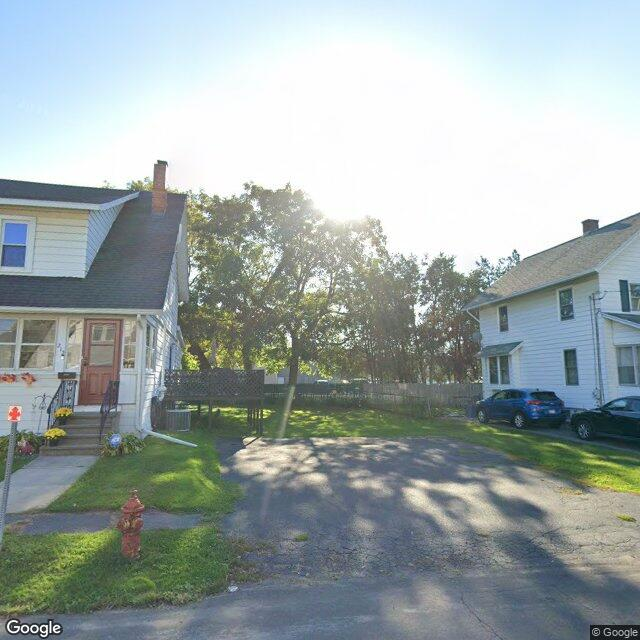

Property entry
219 Malverne Dr
Published 2026-10-02T00:07:42+00:00
Parcel key: 004-23-090

City records
Matches use parcel IDs, normalized addresses, or nearby coordinates. Confirm a match against the source record before relying on it. Publication dates are not source-data dates.
Vacant properties 0
No matches stored for this feed. The feed or address matching may be incomplete; this is not confirmation that no records exist.
Rental registry 0
No matches stored for this feed. The feed or address matching may be incomplete; this is not confirmation that no records exist.
Code violations 0
No matches stored for this feed. The feed or address matching may be incomplete; this is not confirmation that no records exist.
Unfit properties 0
No matches stored for this feed. The feed or address matching may be incomplete; this is not confirmation that no records exist.
AI image observations (unverified)
These observations are generated from an image, not an inspection or an official code finding. No human verification is recorded here.
Image capture date: Not recorded. The entry publication date does not establish the age of the image.
Automated image description
The image shows a residential property at 219 Malverne Dr. The property appears to be a single-family home with visible exterior conditions. The visible conditions include a well-maintained yard, a driveway, a sidewalk, and a clear view of the sky. The front of the home features a small porch and a garage. There is a red stop sign visible at the corner of the driveway and the sidewalk. The image does not show any visible signs of damage, neglect, or overgrowth, and it seems to be taken during the day with natural lighting. There is no visible text or identifying features that provide additional context about the property.
Property type guess: single_family
Visible conditions
- well-maintained lawn and yard
- clear view of the sky
- clear visible exterior conditions
Condition scores
- Roof
- good
- Siding Or Facade
- good
- Windows Doors
- good
- Porch Or Entry
- good
- Yard Or Lot
- good
- Trash Debris
- none_visible
- Vegetation Overgrowth
- none_visible
Visible flags
- Boarded Windows Or Doors
- no
- Fire Damage Visible
- no
- Structural Damage Visible
- no
- Vacancy Signs Visible
- no
- Active Construction Visible
- no
Possible image-only flags
- none
AI review boxes
- yard_or_lot: The lawn and yard are well-maintained.
- roof: The roof appears to be in good condition.
- windows_doors: The windows and doors appear to be in good condition.
- siding_or_facade: The siding or facade appears to be in good condition.
- porch_or_entry: The porch and entry area appear to be in good condition.
- trash_debris: There is no visible debris or trash in the image.
- vegetation_overgrowth: There is no visible overgrowth in the image.
Review reasons
- AI requested human review
- Possible image-only issue
Image quality
- Available
- True
- Bytes
- 68104
- Needs Rerun
- False
["The image is of standard quality, taken during the day with clear visibility. There are no signs of damage, neglect, or overgrowth. The image does not provide any context about the property's occupancy, code violations, or protected class information. There is no text or personal details visible in the image. The image may not be up to date, as it is a single image and does not provide information on when the photo was taken. The image does not show any vehicles, license plates, or unrelated background objects that could be mistaken for exterior conditions. The image does not include any visible flags that may suggest an exterior-condition issue that is not visible in the image. The image does not show any visible signs of vacancy, fire damage, structural damage, or active construction. The image does not show any visible vegetation overgrowth."]
ACS tract context
Census Tract 3; Onondaga County; New York
- Total population
- 1606
- Median household income
- 74716
- Poverty rate
- 18.7
- Housing units
- 708
- Vacancy rate
- 6.6
- Renter-occupied share
- 64.3
- Median gross rent
- 110100
OpenStreetMap nearby
meter search radius
OpenStreetMap lookup failed: HTTP Error 406: Not Acceptable